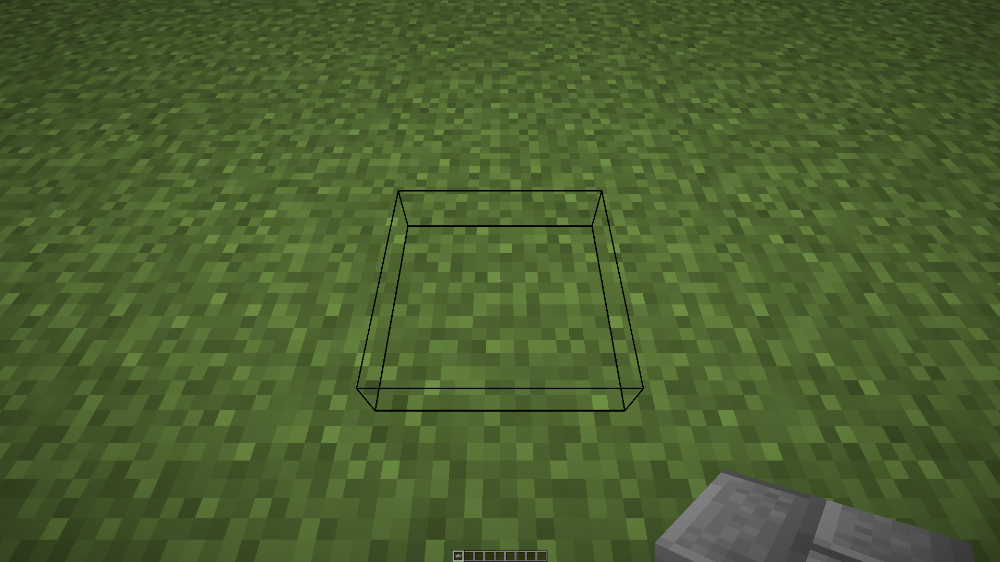

Cut any block into pieces as small as 1/16 of a block and put as many pieces as you like into one block space. Build with slabs 1 pixel thick, sticks 2 pixels wide, windows, shutters, shingles, beams, flower boxes, lanterns, railings, hinges: shapes that no stair or slab has.
Every piece is a real box with its own material, so one block space can hold a stone plinth, an oak post, a glass pane and a brass handle at once. It all renders like an ordinary block: smooth lighting, ambient occlusion, works with Sodium, works on OpenGL and Vulkan.

The roof is made of shingles 4/16 deep and 3/16 high, so the slope is far finer than a stair or slab can do. Plinth, walls, beams, windows with frames and shutters, planters, lanterns and the path: all microblocks.

A gatehouse with battered base, corbelled towers, merlons, arrow slits, a round arch with a raised portcullis and banners.

An arched bridge: every slice of the arch is its own box.

A market stall with a striped awning, fruit trays, barrels, a well with a roof, flower beds and lamp posts.
Three shapes (plane, stick, cube) in the standard sizes 1/16, 1/8, 1/4 and 1/2, plus any other size you cut on the table.


A table with 2/16 legs, a chair, a shelf with books and a lamp.

A special block. Put a block or a microblock in, choose the axis (X / Y / Z) and the sixteenth, press Cut it: you get the two pieces. Cut as often as you want, down to 1/16.

Right-click a block of microblocks with vanilla paper to make a blueprint of it. On the table, put the blueprint and the materials: the table works out how many prefabs the material volume gives and returns the leftover as planes.
A prefab places the whole build at once, anywhere. In the world it is shown as a translucent blue ghost with black outlines of its parts; in the hand and in a slot it is the real model in blue.


/microblock give <block> <a> <b> <c> [count] gives a piece of any size, in sixteenths.Minecraft 1.18.2 to 26.3 (26.1 and 26.1.1 are skipped).
| Versions | Loaders |
|---|---|
| 1.18.2, 1.19.2, 1.19.4, 1.20.1 | Fabric, Forge |
| 1.20.4 | Fabric |
| 1.21 to 26.3 | Fabric, NeoForge |
The pictures were made with the mod's own scenes on a flat world.